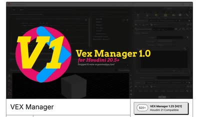

自身の作品制作を振り返り、\\\"Just make it exist first, you can make it good later\\\"という考え方に触れつつ、まず早い段階でスラップコンプ（ラフな合成）まで持っていくことの重要性。制作期間は静止画と合わせて16日弱だった。
記事・リンクを検索
⌘K
自身の作品制作を振り返り、\\\"Just make it exist first, you can make it good later\\\"という考え方に触れつつ、まず早い段階でスラップコンプ（ラフな合成）まで持っていくことの重要性。制作期間は静止画と合わせて16日弱だった。
